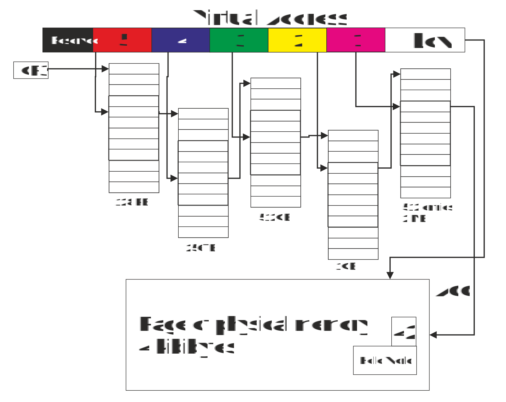
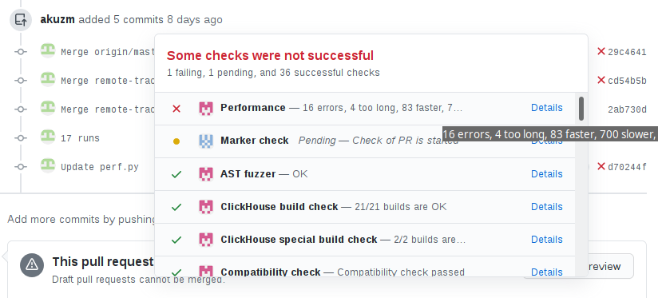
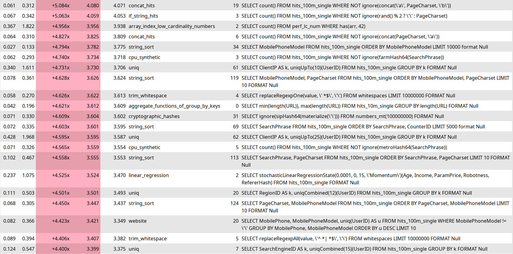
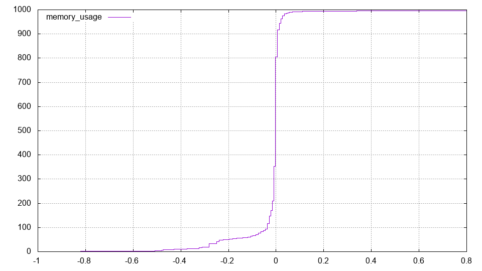
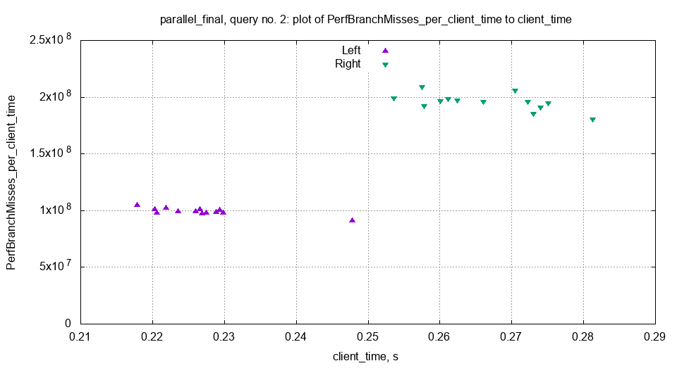

Two Low-Level Optimizations
That I Made Yesterday
Or:
— How I Stayed Home and Wrote Code.
Optimizations in ClickHouse
+ Performance is the main product quality of ClickHouse.
+ We constantly optimize everything...
− Every optimization is a complex experiment.
− Sometimes the experiment fails already in production.
Examples of Controversial Optimizations
 Optimizations that people carefully made,
Optimizations that people carefully made,
but which later "backfired".
From the Linux kernel:
— NUMA awareness;
— Huge Pages.
From the developers' point of view:
— these are good optimizations; users are to blame for all problems.
NUMA Awareness
— the system has multiple processors;
— memory access speed is non-uniform;
— parts of memory belong to different processors;
— working with "your own" memory is faster.
NUMA Awareness
How to allocate physical memory:
1. Any way.
2. In that part of memory that belongs to the processor
that is currently executing the code.
Huge Pages
— programs work with virtual memory;
— virtual memory is mapped to physical memory;
— using a page table (address translation table);
— the mapping unit is a memory page;
— on x86_64 the default page size is 4 KB;
— the page table itself is also stored in memory;
Huge Pages
The page table is stored in memory;
— on x86_64 the default page size is 4 KB.
Example: a program uses 200 GiB of RAM;
— that's up to 50 million entries in the page table.
Page table data structure
— 5-level 512-way trie.
To read something from virtual memory,
do we need to read from memory 5 more times?
— cached by CPU using TLB.

Bellezzasolo - Own work, CC BY-SA 4.0, Wikipedia, 2018
TLB, Example
AMD Zen 2
iTLB:
— 64 entry L1, fully associative;
— 512 entry L2, 8-way set associative.
dTLB:
— 64 entry L1, fully associative;
— 2048 entry L2, 16-way set associative.
Information from wikichip.org.
Huge Pages
Address translation is cached using TLB.
TLB size is small.
TLB miss — memory read (hopefully from cache).
Everything is slow?
Solution — enable Huge Pages.
On x86_64 you can use pages
of size 2 MB or 1 GB instead of 4 KB.
Huge Pages
— explicitly allocated huge pages:
# echo 10 > /proc/sys/vm/nr_hugepages
also see hugetlbfs.
— transparent huge pages:
$ cat /sys/kernel/mm/transparent_hugepage/enabled
always [madvise] never
Examples of Controversial Optimizations
— NUMA awareness;
— Huge Pages.
From the developers' point of view:
— these are good optimizations; users are to blame for all problems.
Just forget about these optimizations?
Performance Tests in ClickHouse
Performance Tests in ClickHouse

Performance Tests in ClickHouse

Performance Tests in ClickHouse
— executes queries alternating between two different server builds;
— collects execution time statistics:
for example 10 runs on the old version and 10 on the new;
— takes bootstrap distribution of the random variable:
what is the difference in query execution time
on a randomly selected pair of runs on old and new versions.
— calculates the median of this random variable
and compares it with the 95% quantile of the random variable,
calculated when comparing the server with itself.
Box, Hunter, Hunter "Statistics for Experimenters", p. 78: "A Randomized Design Used in the Comparison of Standard and Modified Fertilizer Mixtures for Tomato Plants."
Performance Tests in ClickHouse
Outputs one of the results:
— difference is insignificant;
— query sped up;
— query slowed down;
— query is unstable.
Sometimes instead of an unstable query
false acceleration or slowdown is shown.
Why can query execution time be unstable?
Performance Tests in ClickHouse
Why can query execution time be unstable?
Need to look at query execution metrics:
— userspace metrics:
query execution time, rows processed, opened files;
— OS kernel metrics:
wait time, iowait, blkio read bytes;
— CPU metrics:
instructions, branch mispredictions, L1d cache misses, dTLB misses;
All these metrics exist in ClickHouse and are calculated for each query!
Performance Tests in ClickHouse

Performance Tests in ClickHouse

The Problem
Pull request adding support
for UInt256, Int256, Decimal256 types.
Binary size increased (324 MB -> 429 MB).
Perf tests show no slowdowns.
But the number of unstable queries increased!
The Problem
The number of unstable queries increased!
By enumerating all metrics we found that:
— the number of iTLB misses increased.
The Problem
The number of iTLB misses increased.
It seems we need to put the code segment into Huge Pages :)
How to do this?
Use hugetlbfs? But in the test infrastructure
we won't be able to allocate explicit huge pages.
And we'll have to do linking in some strange way.
Use transparent huge pages?
But they only work for anonymous memory mappings.
And our code is an mmap of the executable file segment.
Crazy Solution
Need to remap machine code on the fly!
— allocate new memory chunk for code (mmap);
— do madvise(..., MADV_HUGE);
— do mprotect, add executable and remove write access;
— copy machine code there;
— transfer control to it.
Crazy Solution
Need to remap machine code on the fly!
Doesn't work because we don't have Position Independent Code*.
* because it's more optimal, +1% performance.
Need to delete the old code, allocate new memory at the old location
and copy the machine code there.
The worst code I've written in my life.
Crazy Solution
Step 1: determine the address and length of the memory chunk with our code.
std::pair<void *, size_t> getMappedArea(void * ptr)
{
uintptr_t uintptr = reinterpret_cast<uintptr_t>(ptr);
ReadBufferFromFile in("/proc/self/maps");
while (!in.eof())
{
uintptr_t begin = readAddressHex(in);
assertChar('-', in);
uintptr_t end = readAddressHex(in);
skipToNextLineOrEOF(in);
if (begin <= uintptr && uintptr < end)
return {reinterpret_cast<void *>(begin), end - begin};
}
throw Exception("Cannot find mapped area for pointer", ErrorCodes::LOGICAL_ERROR);
}
Crazy Solution
Step 1: determine the address and length of the memory chunk with our code.
void remapExecutable()
{
auto [begin, size] = getMappedArea(
reinterpret_cast<void *>(remapExecutable));
remapToHugeStep1(begin, size);
}
Crazy Solution
Step 1: determine the address and length of the memory chunk with our code.
void remapExecutable()
{
auto [begin, size] = getMappedArea(
reinterpret_cast<void *>(+[]{}));
// Don't write code like this.
remapToHugeStep1(begin, size);
}
* don't write like this.
Crazy Solution
Step 2: allocate temporary memory,
copy code there and transfer control to it.
void remapToHugeStep1(void * begin, size_t size)
{
/// Allocate scratch area and copy the code there.
void * scratch = mmap(nullptr, size,
PROT_READ | PROT_WRITE | PROT_EXEC, MAP_PRIVATE | MAP_ANONYMOUS, -1, 0);
if (MAP_FAILED == scratch)
throwFromErrno(fmt::format("Cannot mmap {} bytes", size),
ErrorCodes::CANNOT_ALLOCATE_MEMORY);
memcpy(scratch, begin, size);
/// Offset to the scratch area from previous location.
int64_t offset = reinterpret_cast<intptr_t>(scratch) - reinterpret_cast<intptr_t>(begin);
/// Jump to the next function inside the scratch area.
reinterpret_cast<void(*)(void*, size_t, void*)>(
reinterpret_cast<intptr_t>(remapToHugeStep2) + offset)(begin, size, scratch);
}
Crazy Solution
Step 3: delete old code and allocate new memory at its location.
void remapToHugeStep2(void * begin, size_t size, void * scratch)
{
int munmap_res = munmap(begin, size);
if (munmap_res == 0)
std::cerr << "Successfully unmapped\n";
/// ^ segfault here :(
Crazy Solution
Step 3: delete old code and allocate new memory at its location.
After munmap of code, calling any function will cause segfault,
as functions in non-PIC code are called by absolute addresses*, which no longer exist.
But we need functions mmap, madvise, mprotect, memcpy!
mmap, madvise, mprotect — wrappers around system calls;
memcpy — fully userspace function.
* functions from .so, like libc.so, are called a bit differently.
System Calls
std::cerr << "Hello, world\n";
— C++
write(2, "Hello, world\n", 13);
— Libc, POSIX
syscall(SYS_write, 2, "Hello, world\n", 13);
— Libc
__asm__("movq %rdi, %rax;
...
syscall")
System Calls
__attribute__((__noinline__)) int64_t our_syscall(...)
{
__asm__ __volatile__ (R"(
movq %%rdi,%%rax;
movq %%rsi,%%rdi;
movq %%rdx,%%rsi;
movq %%rcx,%%rdx;
movq %%r8,%%r10;
movq %%r9,%%r8;
movq 8(%%rsp),%%r9;
syscall;
ret
)" : : : "memory");
return 0;
}
Crazy Solution
Step 3: delete old code and allocate new memory at its location.
int64_t (*syscall_func)(...) = reinterpret_cast<int64_t (*)(...)>(
reinterpret_cast<intptr_t>(our_syscall) + offset);
int64_t munmap_res = syscall_func(SYS_munmap, begin, size);
if (munmap_res != 0)
return;
/// Map new anonymous memory region in place of the old region with code.
int64_t mmap_res = syscall_func(SYS_mmap, begin, size, ... MAP_FIXED, -1, 0);
if (-1 == mmap_res)
syscall_func(SYS_exit, 1);
/// As the memory region is anonymous, we can do madvise with MADV_HUGEPAGE.
syscall_func(SYS_madvise, begin, size, MADV_HUGEPAGE);
/// Copy the code from scratch area to the old memory location.
...
/// Make the memory area with the code executable and non-writable.
syscall_func(SYS_mprotect, begin, size, PROT_READ | PROT_EXEC);
void(* volatile step3)(void*, size_t, size_t) = remapToHugeStep3;
step3(scratch, size, offset);
Crazy Solution
Step 4: delete temporary memory and return to the call point.
void remapToHugeStep3(void * scratch, size_t size, size_t offset)
{
/// The function should not use the stack,
/// otherwise various optimizations, including "omit-frame-pointer" may break the code.
/// Unmap the scratch area.
our_syscall(SYS_munmap, scratch, size);
/// The return address of this function is pointing to the scratch area
/// (because it was called from there).
/// But the scratch area no longer exists.
/// We should correct the return address by subtracting the offset.
__asm__ __volatile__("subq %0, 8(%%rsp)" : : "r"(offset) : "memory");
}
Crazy Solution
It works.
Doesn't work in debug build.
Doesn't work with sanitizers.
Is there any benefit?
Can it be enabled in production?
What Did We Actually Do?
In a very tricky way changed the code segment in memory
— so that it starts using Huge Pages
— hoping to reduce the number of iTLB misses
— to reduce false positives in perf-tests in CI.
Result:
1. Everything works, Huge Pages are actually used.
2. The number of iTLB misses decreased almost to zero!
3. Query execution speed didn't change :(
4. Did perf-test stability improve? — still unknown.
Conclusions
Want to optimize something — first learn to measure.
Be prepared to conduct many experiments,
most of which won't pay off.
Reliable performance tests are hard to make.
Despite having measurements and continuous integration,
consequences of optimizations may only become known in production.
The riskiest optimizations are for specific hardware
and its operational characteristics.